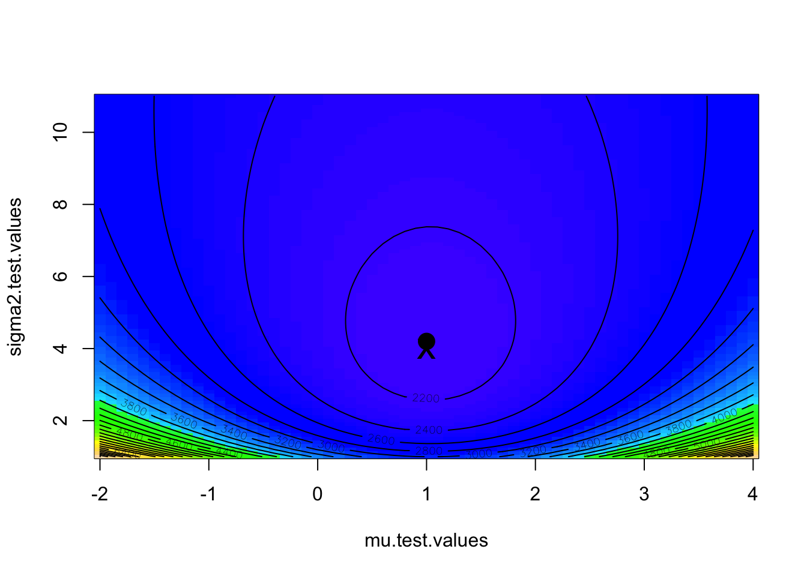
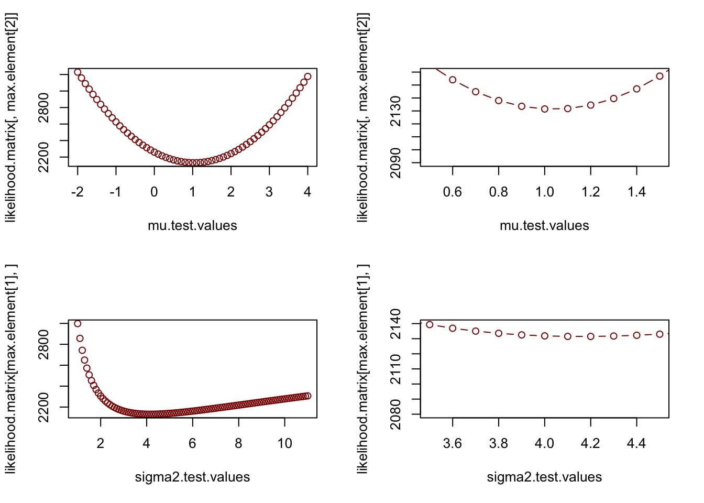

8 Week 4 Lab
On Tuesday we discussed a few ways of getting confidence intervals for parameters under special cases where you have a limiting distribution that allows you to solve for it. Another, much more general, way of obtaining parameter estimates and confidence intervals is to use maximum likelihood.
There are few more important subjects in applied statistics. Maximum likelihood and probability distributions are intimately related, for reasons that will become apparent. To serve as an example, we’ll use the Normal Distribution \(N(\mu,\sigma^{2})\):
The probability density of the normal distribution is given by
\[ f(x|\mu, \sigma) = \frac{1}{\sqrt{2\pi\sigma^{2}}} \exp{\left(-\frac{1}{2}\frac{(x-\mu)^{2}}{\sigma^{2}}\right)} \]
Remember that for variables that are i.i.d., the joint probability \((X_{1},X_{2},X_{3})\) is simply the product of the three p.d.f.s
\[ P(X_{1}\cap X_{2} \cap X_{3})=P(X_{1})\times P(X_{2})\times P(X_{3}) \]
\[ f(X_{1},X_{2},...,X_{n}|\mu, \sigma) = \prod^{n}_{i=1}\frac{1}{\sqrt{2\pi\sigma^{2}}} \exp{\left(-\frac{1}{2}\frac{(X_{i}-\mu)^{2}}{\sigma^{2}}\right)} \]
Taken as a probability density, this equation denotes the probability of getting unknown data \({X_{1},X_{2},...,X_{n}}\) given (|) the known distribution parameters \(\mu\) and \(\sigma\). However, it can be rewritten as a likelihood simply by reversing the conditionality:
\[ L(\mu,\sigma|X_{1},X_{2},...,X_{n}) = \prod^{n}_{i=1}\frac{1}{\sqrt{2\pi\sigma^{2}}} \exp{\left(-\frac{1}{2}\frac{(X_{i}-\mu)^{2}}{\sigma^{2}}\right)} \]
The likelihood specifies the probability of obtaining the known data \({X_{1},X_{2},...,X_{n}}\) by a certain combination of the unknown parameters \(\mu\) and \(\sigma\).
pdf: parameters known, data varies
likelihood: data known, parameters vary
In this way, the relationship between the joint probability density and the likelihood function is a bit like the relationship between the young woman and the old maid in this famous optical illusion:

Figure 0.1: Optical illusion known as “My Wife and my Mother-in-Law”. Source: Wikimedia Commons
Parameter estimates may be found by maximum likelihood simply by finding those parameters that make your data most likely (among all possible data sets).
Conceptually, it helps to remember the Week #1 problem set. The likelihood of obtaining your exact set of colors was very small even when using the true underlying probabilities of each color. Likelihoods are always very small numbers - even the maximum likelihood estimates (MLEs) are very unlikely to produce your dataset, simply because there are so many possible datasets that could be produced. The MLEs are simply those parameters that make your dataset more likely than any other dataset.
The magnitude of the likelihood means nothing. The actual value of the likelihood depends on the size of the “sample space” (how many possible datasets could you imagine getting?), so we can only assign meaning to the relative size of likelihoods among different combinations of parameter values. We can say whether one set of parameter values is more likely to be the “true” population values than other possible sets of parameter values.
We will now discuss how to go about finding MLEs.
First we will calculate the MLE for the normal parameters by hand, and then we will use two different methods of calculating the maximum likelihood estimators using R. First, we are going to do it manually.
The likelihood function for X drawn from \(N(\mu,\sigma^{2})\) is
\[ L(\mu,\sigma|X_{1},X_{2},...,X_{n})= \prod^{n}_{i=1}\frac{1}{\sqrt{2\pi\sigma^{2}}} \exp{\left(-\frac{1}{2}\frac{(X_{i}-\mu)^{2}}{\sigma^{2}}\right)} \]
Because likelihoods are very small, and we are only interested in relative values, we use the log-likelihood values which are easier to work with (for reasons that will become clear)
The log-likelihood (LL) is
\[ LL = \sum_{i}\left(-\frac{1}{2}log(2\pi\sigma^{2})-\frac{1}{2}\frac{(X_{i}-\mu)^{2}}{\sigma^{2}}\right) \]
We want to maximize the LL, which is usually done by minimizing the negative-LL (NLL).To make the algebra easier, I will define \(A=\sigma^{2}\).
\[ NLL=\sum_{i}\left(\frac{1}{2}log(2\pi A)+\frac{1}{2}\frac{(X_{i}-\mu)^{2}}{A}\right) \]
\[ \frac{\partial NLL}{\partial \mu} = \sum_{i}\left(\frac{-(X_{i}-\hat{\mu})}{A}\right)=0 \]
Notice that when I set the left-hand side to 0, the notation changes from \(\mu\) to \(\hat{\mu}\) because the MLE \(\hat{\mu}\) is that value that makes that statement true.
\[ \frac{\partial NLL}{\partial \mu} =\sum_{i}-(X_{i}-\hat{\mu})=0=\Sigma_{i}(X_{i}-\hat{\mu}) \]
\[ n\hat{\mu}-\sum_{i}X_{i}=0 \]
\[ \hat{\mu}=\frac{1}{n}\sum_{i}X_{i} \]
Now we do the same for \(A=\sigma^{2}\)
\[ NLL=\sum_{i}\left(\frac{1}{2}log(2\pi A)+\frac{1}{2}\frac{(X_{i}-\mu)^{2}}{A}\right) \]
\[ \frac{\partial NLL}{\partial A} = \sum_{i}\left(\frac{1}{2}\frac{2\pi}{2\pi\hat{A}}-\frac{1}{2}\frac{(X_{i}-\mu)^{2}}{\hat{A}^{2}}\right)=0 \]
\[ \sum_{i}\left(1-\frac{(X_{i}-\mu)^{2}}{\hat{A}}\right)=0 \]
\[ n-\frac{1}{\hat{A}}\sum_{i}\left((X_{i}-\mu)^{2}\right)=0 \]
\[ \hat{A}=\hat{\sigma^{2}}=\frac{1}{n}\sum_{i}(X_{i}-\mu)^{2} \]
The MLEs are not necessarily the best estimates, or even unbised estimates. In fact, the MLE for \(\sigma^{2}\) is biased (the unbiased estimator replaces n with n-1).
To do this in R, we have to write a function to define the NLL:
For the purposes of a simple example, lets generate some fake “data” by drawing random samples from a \(N(\mu=1,\sigma=2)\).
Next, we will make a matrix to store the values of the likelihood for a grid of potential \(\mu\) and \(\sigma^{2}\) values.
Now we will search parameter space by brute force, calculating the likelihood on a grid of potential \(\mu\) and \(\sigma^{2}\) values.
for (i in 1:length(mu.test.values))
{
for (j in 1:length(sigma2.test.values))
{
likelihood.matrix[i,j]<-neg.ll(x,mu.test.values[i],sigma2.test.values[j])
}
}We can plot the results using the functions ‘image’ and ‘contour’, and place on top of this plot the maximum likelihood as found by the grid search as well as the known parameter values.
image(mu.test.values,sigma2.test.values,likelihood.matrix,col=topo.colors(100))
contour(mu.test.values,sigma2.test.values,likelihood.matrix,nlevels=30,add=T)
max.element<-which(likelihood.matrix==min(likelihood.matrix),arr.ind=T)
points(mu.test.values[max.element[1]],sigma2.test.values[max.element[2]],pch=16,cex=2)
points(1,4,pch='x',cex=2)
Now we can plot the likelihood “slices”, which show cross sections across the search grid for fixed values of \(\mu\) or \(\sigma^{2}\). The right hand panels are just zoomed in versions of the left hand panels so you can see what the NLL function looks like in the vicinity of the MLE.
par(mfrow=c(2,2))
plot(mu.test.values,likelihood.matrix[,max.element[2]],typ="b",col="darkred")
plot(mu.test.values,likelihood.matrix[,max.element[2]],typ="b",xlim=c(0.5,1.5),ylim=c(2090,2160),col="darkred")
plot(sigma2.test.values,likelihood.matrix[max.element[1],],typ="b",col="darkred")
plot(sigma2.test.values,likelihood.matrix[max.element[1],],typ="b",xlim=c(3.5,4.5),,ylim=c(2080,2140),col="darkred")
Notice how the likelihood curve for \(\sigma^{2}\) is not symmetric. While a horizontal line drawn at some higher value (which represents the likelihood of an alternative hypothesis) yields a fairly symmetric confidence interval for \(\mu\), the assymetry of the likelihood surface yields a highly assymetric confidence interval for \(\sigma^{2}\). Confidence intervals do not have to be symmetric! However, immediately in the vicinity of the minimum, the likelihood surface is approximately quadratic and symmetric. We will come back to this in a second.
In this case, the bivariate likelihood surface shows no correlation between \(\mu\) and \(\sigma^{2}\), but this is not always the case. Sometimes you get strong correlations among parameter estimates and get diagonal “ridges” in parameter space. In this case, it is important to distinguish between the likelihood profile and likellihood slices. (see Bolker!) The likelihood surface need not even have a single maximum; there could be several peaks which makes it difficult to define the MLE or its confidence intervals. If there are strong tradeoffs between parameter values, it is often better to discuss the MLEs in terms of a confidence region, which is the envelop of parameter space that you are [insert confidence limit here] percent certain contains the true combination of population parameter values.
R has a function ‘optim’ which optimizes functions (and is thus much better than a simple grid search ‘brute force’ approach we just did) and is very handy for minimizing the LL. We take advantage of the R function that gives us the probability density function, which saves us having to hard code that into R. Make sure the use of ‘dnorm’ in the code below makes sense!
neg.ll.v2<-function(x,params)
{
mu=params[1]
sigma=params[2]
-sum(dnorm(x,mean=mu,sd=sigma,log=TRUE))
}Notice that I used the “log-TRUE” option to take the log inside the dnorm command, which saves me taking it later. I also had to pass the parameters as one variable since that is what ‘optim’ is expecting. Take a second to convince yourself that the neg.ll and neg.ll.v2 functions give the same answer.
We still need a way to maximize the log-likelihood and for this we use the function ‘optim’:
## $par
## [1] 1.03663 2.03866
##
## $value
## [1] 2131.314
##
## $counts
## function gradient
## 57 NA
##
## $convergence
## [1] 0
##
## $message
## NULLAn even easier way is to use the ‘fitdistr’ command we already learned about, but the ‘optim’ function comes in handy all the time and is the only option you have when fitting non-tranditional distributions not covered by ‘fitdistr’.
## mean sd
## 1.03690341 2.03882858
## (0.06447342) (0.04558959)Notice that this function outputs the SE as well, whereas our function and ‘optim’ only give the MLE. Note that we can use the SE provided by ‘optim’ to calculate a confidence interval. For example, the 95th percentile CI would be given by \((\mbox{MLE estimate} - 1.96*SE, \mbox{MLE estimate} + 1.96*SE)\). But notice that using the SE in this way yields symmetric confidence intervals (LL and UL both the same distance from the MLE) and yet we just showed above that the actual CI may be asymmetric (like it was for \(\sigma\)). This is because ‘optim’ is approximating the likelihood surface as a quadratic surface in the vicinity of the MLE, and this is only a good approximation if the likelihood surface is indeed quadratic and symmetric in the vicinity of the MLE. So ‘optim’’s assumption that the NLL profile is symmetric and well fit by a quadratic function is a reasonable function for the \(\mu\) parameter but its a bad approximation for the \(\sigma\) parameter. When you are doing “mission critical” analysis for your research, it is better to find the correct CI by using the likelihood profile and not the SE provided by ‘optim’.
Keep in mind that the likelihood is a relative concept that only makes sense relative to other possible datasets. The absolute magnitude depends on the “sample space” of the data and sometimes even the maximum likelihood is a very small value. So all we can do is compare relative likelihoods.
We now know how to use maximum likelihood to calculate the “best” parameter value (in the sense that it is the parameter value that maximizes the likelihood, or minimizes the negative log-likelihood.) But we know that parameter estimates by themselves are useless. We need to somehow calculate the uncertainty in our maximum likelihood estimate, i.e. the confidence interval.
For example, if I have a one-parameter model (let’s call the parameter \(\theta\)) and I want to find a confidence interval on \(\theta\), then I want to ask the question: What values of estimated theta are reasonable under the null hypothesis that \(\hat{\theta}\) is the true value? We want to find a window of \(\theta\) values around \(\hat{\theta}\) that are similar enough to \(\hat{\theta}\) that I would not reject the null hypothesis (that \(\hat{\theta}\) is the true value). Since \(\hat{\theta}\) is the one that minimizes the NLL surface, any other \(\theta\) value would have a higher NLL.
It turns out that, if one model represents a special case of another likelihood, the ratio between two likelihoods is related to a \(\chi^{2}\)-distribution.
\[ -2log\left(\frac{\widehat{\mbox{L}_{r}}}{\widehat{\mbox{L}}}\right) \sim \chi^{2}_{r} \]
where \(r\) is the number of “constrained” parameters for the smaller model. So if I compare a model where \(\theta\) is allowed to vary (the original model) to one in which I fix \(\theta\) arbitrarily (somewhere higher on the NLL surface), then the likelihood ratio (\(\times\) -2) follows a \(\chi^{2}_{1}\).
Therefore, we can set a cut-off for the difference in log-likelihoods based on the 95th percentile of the \(\chi^{2}\) distribution.
## [1] 1.920729which equals 1.92 log-likelihood units if you are looking at only one parameter to be estimated. Therefore, if we have only one parameter, then we simply calculate the NLL over a range of parameter values, and find the CIs representing those parameter estimates which have <1.92 increase in NLL from the MLE. The correct cut-off (i.e. the “depth” of the water filling the NLL) depends on the number of parameters being estimated as well as the desired width of the CI. The Poisson distribution you will look at in the problem set has only a single parameter \(\lambda\) but the Normal distribution has two parameters (\(\mu\) and \(\sigma\)) and so we would use a different cut-off for these two distributions.
| Parameters | CI_90th | CI_90th | CI_90th |
|---|---|---|---|
| 1 | qchisq(0.90,1)/2 = 1.353 | qchisq(0.95,1)/2 = 1.921 | qchisq(0.99,1)/2 = 3.317 |
| 2 | qchisq(0.90,2)/2 = 2.303 | qchisq(0.95,2)/2 = 2.996 | qchisq(0.99,2)/2 = 4.605 |
| 3 | qchisq(0.90,3)/2 = 3.126 | qchisq(0.95,3)/2 = 3.907 | qchisq(0.99,3)/2 = 5.672 |
| 4 | qchisq(0.90,4)/2 = 3.890 | qchisq(0.95,4)/2 = 4.744 | qchisq(0.99,4)/2 = 6.638 |
You will explore this more in the problem set. There is also more discussion of this in Bolker’s Chapter #6.
While the above method (finding the bounds on the parameter within which the increase in the NLL is less than or equal to the threshold determined by the number of parameters and the desired critical value \(\alpha\)) is the best method of finding the confidence intervals for a parameter, it’s worth coming back to the idea that “fitdistr” returns an estimate of the parameter standard errors. How does “fitdistr” do that? It turns out that the standard error is related to the inverse of the second derivative of the NLL right in the vicinity of the minimum where the curve is approximately quadratic. (The second derivative of the NLL has to be positive, do you see why?)

Figure 8.1: Comparing steep and shallow NLL functions, and its impact on the estimated standard errors.
A large second derivative is associated with a steep curve in the NLL, and this results in a small standard error (does this make sense?). Conversely, a very flat NLL that gently slopes up would be associated with a large standard error. So, if “fitdistr” estimates the standard error, why not just create the confidence intervals using [MLE-1.96\(\times\)SE, MLE+1.96\(\times\)SE]? Well, you could, but this assumes that the NLL is symmetric around its minimum and that the confidence interval is correspondingly symmetric around the maximum likelihood estimate. For some parameters for some distributions, this assumption will be fine, but for other parameters this may be a poor assumption and so the confidence intervals created using the standard error will be only approximate (and the approximation may not be that accurate, especially if you want 90th or 50th percentile confidence intervals [do you see why the approximation gets worse as you estimate larger CI intervals?]). Using the NLL function directly in the manner described about involves no approximation and will always be more correct.